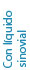

Tratamiento de columna sin cirugía
Actualmente los procedimiento de mínima invasión, han tomado gran importancia para la solución de padecimientos en columna (hernias, dolor facetario, desgaste del disco, artrosis, etc.), derivado de esto, la recomendación es hacer un diagnostico integral apoyado con estudios de radiología dinámica , tomografía y resonancia, que apoyarán el tratamiento ideal que van desde infiltraciones con esteroide, ozonoterapia y la novedosa radiofrecuencia que permiten eliminar el síndrome doloroso derivado de los factores de inflamación que se producen, por tal razón, estos procedimientos se realizan sin cirugía abierta, pero se necesita de equipo especializado y en quirófano sin la necesidad de anestésicos, logrando resultados que se reflejan de forma inmediata,
disminuyendo el dolor en un gran porcentaje y permitiendo incorporarse a sus actividades en breve tiempo, aunque definitivamente se condicionara a un seguimiento permanente para evitar recidivas, por lo que la terapia física de ejercicio enfocado al fortalecimiento muscular para-vertebral será fundamental, así como las medidas de higiene de columna y control de peso.
*Recuerde que un diagnostico preciso es fundamental para que el tratamiento ofrecido sea el adecuado y así como las técnicas no invasivas tienen gran éxito, estas deberán estar bien justificadas para tal efecto.
*Recuerde que un diagnostico preciso es fundamental para que el tratamiento ofrecido sea el adecuado y así como las técnicas no invasivas tienen gran éxito, estas deberán estar bien justificadas para tal efecto.


Tratamiento Hernia Discal
Infiltración por síndrome facetario lumbar en paciente de 60 años.
Procedimiento de consultorio con anestesia local.
Procedimiento de consultorio con anestesia local.